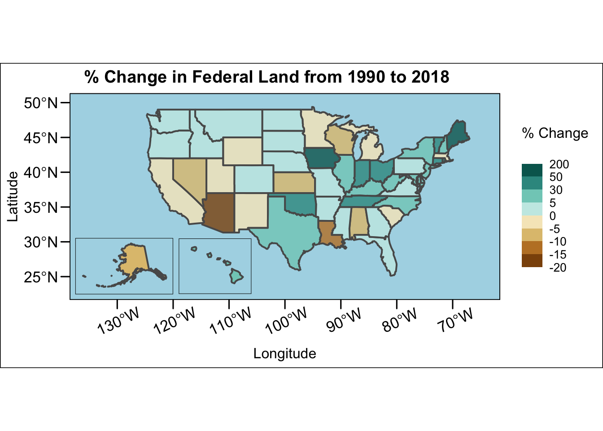
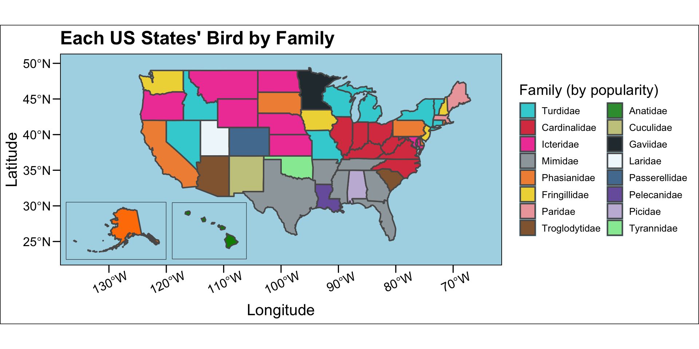

Linking to GEOS 3.11.0, GDAL 3.5.3, PROJ 9.1.0; sf_use_s2() is TRUE
library(ggthemes) #for setting my static maps design
#State Boundariesstates_sf <-read_sf("https://rstudio.github.io/leaflet/json/us-states.geojson") |>select(name, geometry)# Shoutout Prof. B-V for teaching me how to do this! This is my numeric datasetpublicland <-read_csv("https://raw.githubusercontent.com/StarryAri7/SDS264_F24/refs/heads/main/data/2018%20land%20cover.csv") |># The data had % signs in it and was categorical, which wouldn't work for # my purposes, this removes that issuemutate(federal_land_pcnt =str_replace(federal_land_pcnt, "%", ""),federal_land_pcnt =as.numeric(federal_land_pcnt),change_1990 =str_replace(change_1990, "%", ""),change_1990 =as.numeric(change_1990))
Rows: 51 Columns: 4
── Column specification ────────────────────────────────────────────────────────
Delimiter: ","
chr (4): State, federal_land_pcnt, change_1990, label
ℹ Use `spec()` to retrieve the full column specification for this data.
ℹ Specify the column types or set `show_col_types = FALSE` to quiet this message.
# This joins my numeric dataset to the state boundaries publicland <- states_sf |>left_join(publicland, by =c("name"="State"))#My Federal Land data was taken from a 2018 report by congress found at #https://crsreports.congress.gov/product/pdf/r/r42346#:~:text=The%20amount%20#and%20percentage%20of%20federally%20owned,use%20in%20that%20part%20of%20the%20#country.# I used table 4# This is my categorical dataset!birds <-read_csv("https://raw.githubusercontent.com/StarryAri7/SDS264_F24/refs/heads/main/data/birds.csv")
Rows: 50 Columns: 5
── Column specification ────────────────────────────────────────────────────────
Delimiter: ","
chr (5): State, family, state_bird, simplified, label
ℹ Use `spec()` to retrieve the full column specification for this data.
ℹ Specify the column types or set `show_col_types = FALSE` to quiet this message.
# This again joins it to the state boundariesbirdsstates <- states_sf |>left_join(birds, by =c("name"="State"))# My bird data was found at https://www.50states.com/bird/ # The website is interesting, but I double checked the data!
# For my static map I really wanted to find a way to include Alaska and Hawaii, # this leads to some strange/redundant looking code at times# To start, I mainland2 <- publicland |>#This sets a better CRS, as the main one is very distorted st_transform("+init=epsg:8901") |># I remove Alaska and Hawaii here to just make a base map with the lower 48filter(name !="Alaska", name !="Hawaii") |>ggplot() +geom_sf(aes(fill = change_1990), lwd = .7, alpha = .8) +# I set a binned diverging color scale here, and some clean breaks# Iowa is a big outlier at 193% here, causing the huge jump from 50 to 200scale_fill_fermenter(palette ="BrBG",direction=1,limits=c(-20,200), breaks =c(-20,-15,-10,-5,0,5,30,50,200)) +labs(title =" % Change in Federal Land from 1990 to 2018",x ="Longitude",y ="Latitude",# This kept running into the text, so I added a linebreakfill ="% Change\n") +# This moves the bounding box of the map to allow space for Alaska and Hawaiicoord_sf(xlim =c(-135,-65),ylim =c(23,50)) +# This theme works very well to provide an empty background and axes Lat/Long# It is also worth noting that Hawaii and alaska don't have accurate lats +# longs listed, but I couldn't figure out a way to make it work, let alone# in a nice looking waytheme_base() +# These are some fine tuned changes I made, I set the background as blue # instead of having a satellite background to make the input of Alaska and# Hawaii more seamless, theme(panel.background =element_rect(fill ='lightblue'),# I changed the size of the legend text and title so they wouldn't bleedlegend.title =element_text( size=12), legend.text=element_text(size=10),# I angled the Longitude so it wouldn't overlapaxis.text.x =element_text(angle =25, vjust = .8),title =element_text(size =12) )
Warning in CPL_crs_from_input(x): GDAL Message 1: +init=epsg:XXXX syntax is
deprecated. It might return a CRS with a non-EPSG compliant axis order.
public_alaska2 <- publicland |>filter(name =="Alaska") |>ggplot() +# I hid the legend here as to clean up the smaller mapgeom_sf(aes(fill = change_1990),show.legend =FALSE, lwd = .7) +# This centers the crs on Alaska and sets a custom limit so alaska isn't # touching the edge of the boxcoord_sf(crs =st_crs(3467), xlim =c(-2400000, 1600000), ylim =c(200000, 2500000)) +# This is a duplicate of the above color palette to ensure consistency, as # this technically only contains data for Alaska nowscale_fill_fermenter(palette ="BrBG",direction=1,limits=c(-20,200), breaks =c(-20,-10,-15,-5,0,5,30,50,200)) +# Removes axis to prevent lots of awful lines from appearing theme_void() +# Sets the background to blue to match the other maptheme(panel.background =element_rect(fill ='lightblue'))public_hawaii2 <- publicland |>filter(name =="Hawaii") |>ggplot() +geom_sf(aes(fill = change_1990),show.legend =FALSE, lwd = .7) +# Same as above, centered on Hawaii and clipped, added expand = FALSE, # to make it a little bigger, as it was shrinking the islands too muchcoord_sf(crs =st_crs(4135), xlim =c(-161, -154), ylim =c(18, 23),expand =FALSE) +# Same as abovescale_fill_fermenter(palette ="BrBG",direction=1,limits=c(-20,200), breaks =c(-20,-10,-15,-5,0,5,30,50,200)) +# Same as abovetheme_void() +# Same as abovetheme(panel.background =element_rect(fill ='lightblue'))# This plots our main mapmainland2 +# This is a common way I found to overlay plots, it states the ggplot as a # grob with a bounding box, and I then manipulated its size and locationannotation_custom(grob =ggplotGrob(public_alaska2),xmin =-137.5,xmax =-120,ymin =13,ymax =40) +# And repeated again here for Hawaii!annotation_custom(grob =ggplotGrob(public_hawaii2),xmin =-119,xmax =-106,ymin =13, ymax =40)

Alt-text / Description
This is a chloropleth map of the United States of America, the X and Y axis are longitude and latitude, respectively. Alaska and Hawaii have been moved to the bottom left of the map for clarity of sight. Each state is filled with a color based on the percentage of change in federal land from 1990 to 2018. They range from -20% (a decrease in federal land) to 193% (a large increase in federal land). The biggest takeaway is that the majority of states have changed no more than 5% in the positive or negative direction. the pacific northwest seems to have gained land slightly, while the southwest states have all lost land, with Arizona having decreased the most in the country. The eastern side of the US, has largely made gains from 1% up to 70% in Maine.
# This is by and large the same technique as last time, so I will only# highlight how the code changes herebird_mainland <- birdsstates |>drop_na(family) |># I ordered the data to appear by number of rows in the dataset (popularity)mutate(family =fct_infreq(family)) |>st_transform("+init=epsg:8901") |># I had originally wanted to filter out Alaska and Hawaii out here, but then# the legend would be missing a line, so I removed this line, and technically# Alaska and Hawaii are loaded twice, once out of frame!# filter(name != "Alaska", name != "Hawaii") |>ggplot() +geom_sf(aes(fill = family), lwd = .7, alpha = .8) +labs(title ="Each US States' Bird by Family",x ="Longitude",y ="Latitude",fill ="Family (by popularity)") +# I had to manually set the color scale here, as even by simplifying birds to# their family, there were still 16 levels, but I chose a set of colors I# felt could be easily distinguishedscale_fill_manual(values =c("Anatidae"="green4", #nene"Cardinalidae"="#E31A1C", #cardinal"Cuculidae"="khaki3", #roadrunner"Fringillidae"="gold1", #goldfinches (+1)"Gaviidae"="black",#loon"Icteridae"="deeppink1", #meadowlark"Laridae"="white", #gull"Mimidae"="gray60", #mockingbird"Paridae"="#FB9A99", #chickadee"Passerellidae"="steelblue4", #lark bunting"Pelecanidae"="#6A3D9A", # pelican"Phasianidae"="#FF7F00", #pheasants"Picidae"="#CAB2D6", #flicker"Troglodytidae"="darkorange4", #wrens"Turdidae"="darkturquoise", #bluebirds and robins"Tyrannidae"="palegreen2"#flycatcher )) +# Due to the aforementioned issue with needing to leave Hawaii and Alaska in# off-screen, I had to manually reset the visual fieldcoord_sf(xlim =c(-135,-65),ylim =c(23,50)) +theme_base() +theme(panel.background =element_rect(fill ='lightblue'),legend.title =element_text( size=15), legend.text=element_text(size=10),axis.text.x =element_text(angle =25, vjust = .8)) +# I added this line to create 2 colimns of the legend, to make it more clean# and readable. Conviniently, the first column is all families that appear # 2 or more times, and families in the second column each only appear once!guides(fill =guide_legend(nrow =8)) # Again, very similar to my last static mapbird_alaska <- birdsstates |>filter(name =="Alaska") |>ggplot() +geom_sf(aes(fill = family),show.legend =FALSE, lwd = .7) +coord_sf(crs =st_crs(3467), xlim =c(-2400000, 1600000), ylim =c(200000, 2500000)) +# Set the same color scale, so it would know how to color the state in contextscale_fill_manual(values =c("Anatidae"="green4", #nene"Cardinalidae"="#E31A1C", #cardinal"Cuculidae"="khaki3", #roadrunner"Fringillidae"="gold1", #goldfinches (+1)"Gaviidae"="black",#loon"Icteridae"="deeppink1", #meadowlark"Laridae"="white", #gull"Mimidae"="gray60", #mockingbird"Paridae"="#FB9A99", #chickadee"Passerellidae"="steelblue4", #lark bunting"Pelecanidae"="#6A3D9A", # pelican"Phasianidae"="#FF7F00", #pheasants"Picidae"="#CAB2D6", #flicker"Troglodytidae"="darkorange4", #wrens"Turdidae"="darkturquoise", #bluebirds and robins"Tyrannidae"="palegreen2" )) +theme_void() +theme(panel.background =element_rect(fill ='lightblue'))# This is all the samebird_hawaii <- birdsstates |>filter(name =="Hawaii") |>ggplot() +geom_sf(aes(fill = family),show.legend =FALSE, lwd = .7) +coord_sf(crs =st_crs(4135), xlim =c(-161, -154), ylim =c(18, 23), expand =FALSE) +scale_fill_manual(values =c("Anatidae"="green4", #nene"Cardinalidae"="#E31A1C", #cardinal"Cuculidae"="khaki3", #roadrunner"Fringillidae"="gold1", #goldfinches (+1)"Gaviidae"="black",#loon"Icteridae"="deeppink1", #meadowlark"Laridae"="white", #gull"Mimidae"="gray60", #mockingbird"Paridae"="#FB9A99", #chickadee"Passerellidae"="steelblue4", #lark bunting"Pelecanidae"="#6A3D9A", # pelican"Phasianidae"="#FF7F00", #pheasants"Picidae"="#CAB2D6", #flicker"Troglodytidae"="darkorange4", #wrens"Turdidae"="darkturquoise", #bluebirds and robins"Tyrannidae"="palegreen2" )) +theme_void() +theme(panel.background =element_rect(fill ='lightblue'))# I used the same setup and scale down here as wellbird_mainland +annotation_custom(grob =ggplotGrob(bird_alaska),xmin =-137.5,xmax =-120,ymin =13,ymax =40) +annotation_custom(grob =ggplotGrob(bird_hawaii),xmin =-119,xmax =-106,ymin =13, ymax =40)

# This map generates weird with the legend, so the sizing is a little off.# The rotation of X axis is maybe not needed but it looks bad in the mini# viewer, so I elected to keep it
A major insight from this map is that many regions of states choose birds within the same family, implying that bird likely lives within that area. this is especially true of the Icteridae (Meadow larks) in the great plains, Mimidae (mocking birds) in the south east, and Cardinalidae (Cardinals) in the central eastern region. All 3 of these birds have high concentrations in these areas, so their states seem to have chosen a local bird that they feel represents them.
#I had some issues with NA's in this leaflet so I removed them all at the startbirdsstates <- birdsstates |>drop_na(family)# This sets the color palette, the same as with the static map pal <-colorFactor(palette =c("Anatidae"="green4", #nene"Cardinalidae"="#E31A1C", #cardinal"Cuculidae"="khaki3", #roadrunner"Fringillidae"="gold1", #goldfinches (+1)"Gaviidae"="black",#loon"Icteridae"="deeppink1", #meadowlark"Laridae"="white", #gull"Mimidae"="gray60", #mockingbird"Paridae"="#FB9A99", #chickadee"Passerellidae"="steelblue4", #lark bunting"Pelecanidae"="#6A3D9A", # pelican"Phasianidae"="#FF7F00", #pheasants"Picidae"="#CAB2D6", #flicker"Troglodytidae"="darkorange4", #wrens"Turdidae"="darkturquoise", #bluebirds and robins"Tyrannidae"="palegreen2"),domain = birdsstates$family)# I created a custom label variable so that the map could have clean labels!birdsstates |># I again ordered the legend, probably could've done this at the start...mutate(family =fct_infreq(family)) |>leaflet() |># I added the background for the intercative mapaddProviderTiles("OpenStreetMap") |># Setting the view is easy with an SF, I chose this to fully show all the# states, I wanted it slightly more zoomed but it only takes integers and 3# is far too muchsetView(-96, 50, 2) |># This sets the state polygons defined by the geometry and colored by familyaddPolygons(fillColor =~pal(family),weight =2,opacity =1,# I really like the white dash outlinecolor ="white",dashArray ="5",# I wanted a little opacity so you can see the state names!fillOpacity = .7,# The highlight is one of my favorite featureshighlightOptions =highlightOptions(weight =5,color ="#666",dashArray ="",fillOpacity =0.7,bringToFront =TRUE),# Again I wanted to set cutstom clean labels, so I used this formatlabel = birdsstates$label,labelOptions =labelOptions(style =list("font-weight"="normal", padding ="3px 15px"),textsize ="15px",direction ="auto")) |># I added the legend to match the static plotaddLegend(pal = pal, values =~family, title ="State Bird Family",position ="bottomright",opacity=.7) |># I think the title looks nice, but it could get in the way, easily removed!addPopups(-95, 50, "Each US State's Bird, colored by Family",options =popupOptions(closeOnClick =FALSE)) |># You gotta have a scale bar!addScaleBar(position ="bottomleft")
# Same issue with Na'spublicland <- publicland |>drop_na(change_1990)# Here I set the bins for legend, and the color scalebins <-c(-20,-15,-10,-5,0,5,30,50,200) pal2 <-colorBin("BrBG",bins = bins )publicland |>leaflet() |>addProviderTiles("OpenStreetMap") |># Same viewsetView(-96, 50, 2) |># Sets the polygons, same setup as last timeaddPolygons(fillColor =~pal2(change_1990),weight =2,opacity =1,color ="white",dashArray ="5",fillOpacity = .8,highlightOptions =highlightOptions(weight =5,color ="#666",dashArray ="",fillOpacity =0.8,bringToFront =TRUE),# Same custom label set uplabel = publicland$label,labelOptions =labelOptions(style =list("font-weight"="normal", padding ="3px 15px"),textsize ="15px",direction ="auto")) |># I have to admit the negative numbers look really messy, but I'm not sure of# another way to do it I would love it to be '-20 to -15' etc.addLegend(pal = pal2, values =~change_1990, title ="% Change",position ="bottomright",opacity=.8) |># Same Title SetupaddPopups(-95, 50, "% Change in Public Land from 1990 - 2018",options =popupOptions(closeOnClick =FALSE)) |># And you just have to have that scale bar # (this also helps if you remove the above line, adds a pipe catch)addScaleBar(position ="bottomleft")